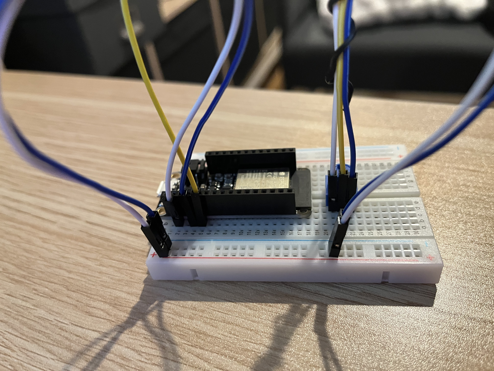
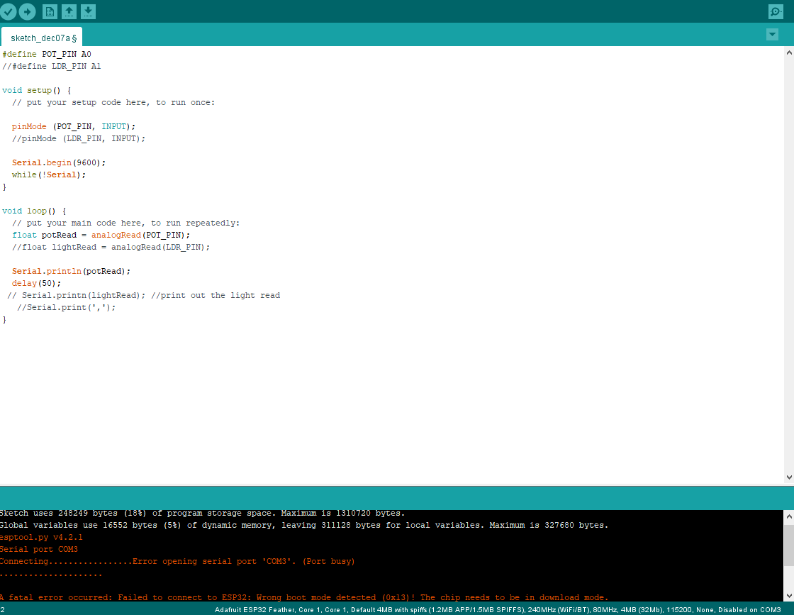

Project 4: Single-Channel Controller
Week 12
- First we set up the poteniometer by connecting it to A0 port along with power and ground on our Adafruit. 
- next setup the poteniometer in our code... 
- Then we attached the button the same way, but this time we connected it to Pin 13.
- Added the button to our code.
- Then I tested if it was working and it was!
- Next we tried adding a Flex sensor.
- It took a several tries to get the code to compile. I was trying to add it in the same format we added the other ojects but I realised I was missing some information on how it processes input.
- So I looked up how the flex sensor function and followed a tutorial on how to code it to display the inputs. It was sucessful in compiling and uploading to the board.
- How ever when testing it wasn't displaying the new println. This is where I left it to work on the next part.